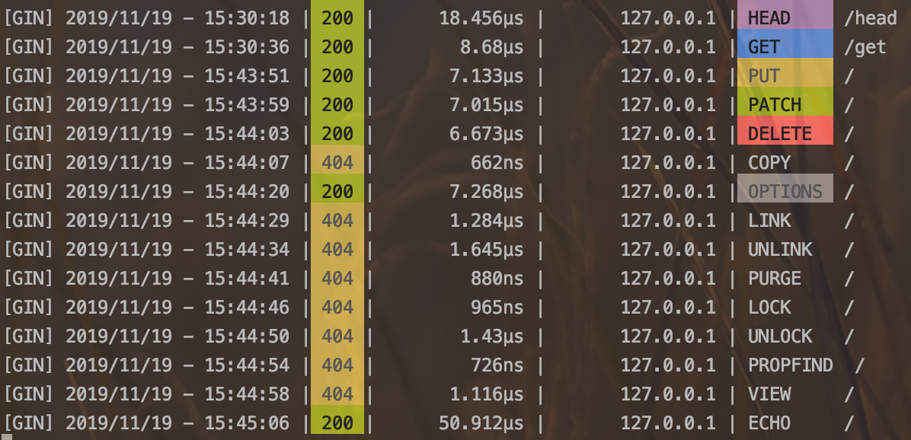

Gin教程(4)—HTTP方法处理
HTTP方法类型
根据 HTTP 标准，HTTP 请求可以使用多种请求方法。
- HTTP1.0 定义了三种请求方法： GET, POST 和 HEAD方法。
- HTTP1.1 新增了六种请求方法：OPTIONS、PUT、PATCH、DELETE、TRACE 和 CONNECT 方法。
| 方法 | 描述 |
|---|---|
| GET | 请求指定的页面信息，并返回实体主体。 |
| HEAD | 类似于 GET 请求，只不过返回的响应中没有具体的内容，用于获取报头 |
| POST | 向指定资源提交数据进行处理请求（例如提交表单或者上传文件）。数据被包含在请求体中。POST 请求可能会导致新的资源的建立和/或已有资源的修改。 |
| PUT | 从客户端向服务器传送的数据取代指定的文档的内容。 |
| DELETE | 请求服务器删除指定的页面。 |
| CONNECT | HTTP/1.1 协议中预留给能够将连接改为管道方式的代理服务器。 |
| OPTIONS | 允许客户端查看服务器的性能。 |
| TRACE | 回显服务器收到的请求，主要用于测试或诊断。 |
| PATCH | 是对 PUT 方法的补充，用来对已知资源进行局部更新 。 |
| MOVE | 请求服务器将指定的页面移至另一个网络地址。 |
| COPY | 请求服务器将指定的页面拷贝至另一个网络地址。 |
| LINK | 请求服务器建立链接关系。 |
| UNLINK | 断开链接关系。 |
| WRAPPED | 允许客户端发送经过封装的请求。 |
| Extension-mothed | 在不改动协议的前提下，可增加另外的方法。 |
可能还有其他我没接触过的方法，欢迎大家补充哈😄！
Gin对于HTTP方法的支持
Gin v1.4.0版本默认只支持：GET, POST, PUT, PATCH, HEAD, OPTIONS, DELETE, CONNECT, TRACE 这几种方法，但是我们也可以通过RouterGroup.Handle()函数自行拓展。
示例代码：
package main
import (
"github.com/gin-gonic/gin"
"net/http"
)
func main(){
webEng := gin.Default()
//普通方法
webEng.GET("/get", HandleGeneric)
webEng.POST("/post", HandleGeneric)
webEng.HEAD("/head",HandleGeneric)
//同时绑定所有支持的方法：GET, POST, PUT, PATCH, HEAD, OPTIONS, DELETE, CONNECT, TRACE.
webEng.Any("/",HandleAny)
//绑定自定义方法
webEng.Handle("ECHO","/", HandleAny)
webEng.Run(":8080")
}
func HandleGeneric(c *gin.Context){
c.String(http.StatusOK,"generic method: %s", c.Request.Method)
}
func HandleAny(c *gin.Context){
c.String(http.StatusOK,"method : %s", c.Request.Method)
}
说明：
- 对于：GET, POST, PUT, PATCH, HEAD, OPTIONS, DELETE，这7种HTTP方法，gin.RouterGroup提供了相应封装好的方法，可以直接使用。
- 如果希望某个路由支持所有的请求方法，或者请求方法不确定，可以使用RouterGroup.Any()函数绑定。
- 如果希望支持其他的HTTP方法，或是自定义的HTTP方法，需要使用RouterGroup.Handle()函数。
调试结果：

代码下载：https://github.com/IrvinYoung/gin-lessons
转载请注明来源，欢迎对文章中的引用来源进行考证，欢迎指出任何有错误或不够清晰的表达。可以在下面评论区评论，也可以邮件至 irvin.em@live.com
文章标题:Gin教程(4)—HTTP方法处理
本文作者:dino
发布时间:2019-11-19, 15:49:53
最后更新:2019-11-19, 16:23:39
原始链接:https://blog.walkbc.com/2019/11/19/gin-lesson-httpMothed/版权声明: "署名-非商用-相同方式共享 4.0" 转载请保留原文链接及作者。